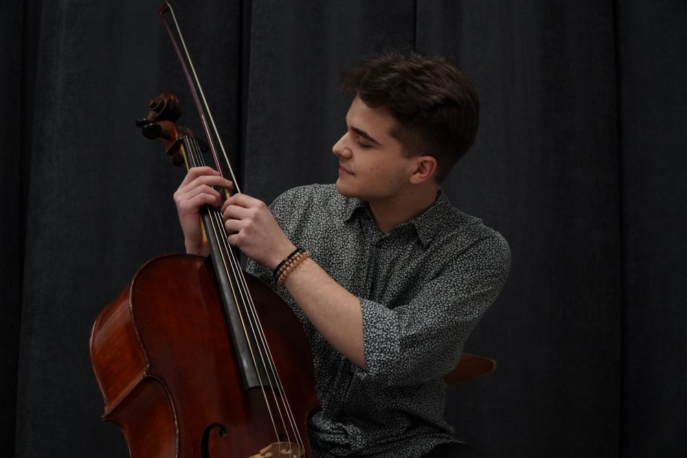

Ensemble Metamorphosis
23 September 2025
Sarajevo, Bosnia and Herzegovina
|
Pavle Rakočević, born in Paraćin, in the year 2000. At the age of six, he enrolled in the School for Musical Talents in Ćuprija, Serbia, where he started playing the cello in the class of Professor Boža Saramandić, under whom he graduated in 2018. That same year, he enrolled at the Faculty of Music in Belgrade, in the class of Professor Dragan Đorđević. He completed his undergraduate studies in 2023. following Master's studies in Chamber Music in 2024, in the class of Professor Nemanja Stanković, in Belgrade, Serbia. |
 |
He has performed in significant halls across Europe and Asia, both as a soloist, a member of chamber ensembles, and as a member of orchestras. Notable performances include the Philharmonie in Essen, “Konzerthaus” in Berlin, Elbphilharmonie in Hamburg, Zaryad’ye Concert Hall in Moscow, “Kamakura Performing Arts Center” in Tokyo. He has performed at festivals such as BEMUS, BELEF, BLISS, ARLEMM, STRINGS Leskovac, BUNT, Kustendorf Classic, Meta World, KotorArt, HAMMER, MESS, OKTOH, Young Euro Classic, Cello Fest… He has collaborated with the Belgrade Philharmonic, the RTS Symphony Orchestra, the Metamorphosis Ensemble, the Chamber Orchestra "Gudači sv. Đorđa", the National Theatre in Belgrade, the National Theatre in Banja Luka, the Belgrade Chamber Orchestra, the Schlesinger Orchestra, No Borders Orchestra, chamber orchestra “Slavenski”, as well as with members of "Belgrade Baroque" He has attended masterclasses with Dragan Đorđević, Imre Kalman, Damjan Saramandić, Milutin Mladenović, Ivan Kučer, Denis Severin, Aleksandar Latković, Laslo Fenjo.... Read more
Since its foundation in 2005, the Belgrade ensemble Metamorphosis has established itself in the Serbian classical music scene as an inspiring ensemble with outstanding and innovative interpretations of the classical repertoire as well as the music of local and international contemporary composers. Pavle is a member of the ensemble Metamorphosis since 2019.
String Quartet "Anima" was founded in 2025. and its members are Teofil Milenkovic (violin), Marija Tunic (violin), Ana Djordjevic (viola), and Pavle Rakocevic (cello). They performed in Italy, aswell as Serbia, collaborating with Festival "Innamorarsi Della Musica".
Trio "P Piccolo" was formed in September 2019 and consists of Stefan Petrović (violin), Pavle Rakočević (cello), and Iva Vuković (piano). They were students at the Faculty of Musical Arts in the class of Professor Nemanja Stanković. "They are young, talented, virtuosic, and possess a special “joy of music-making” - they always play with a smile" (Gordana Krajachich - the newspaper "Politika"). Over the previous four years, they have been actively performing at numerous concerts in all significant halls across Serbia (The Great Hall of the Kolarac Endowment, the Student Cultural Center, the Artget Gallery, Clu Guarnerius...). Their repertoire includes works by many composers of classical and contemporary music.
The Radio Television of Serbia Symphony Orchestra is one of the most prominent orchestral ensembles of Serbia. Founded in 1937 as a part of “Radio Belgrade”, the Symphony Orchestra has always had profiled artistic directions, oriented towards the affirmation and preservation of national music heritage, as well as capital works of world literature. From January 2025. Pavle is honorarly working as a principal Cello.
23 September 2025
Sarajevo, Bosnia and Herzegovina
27 September 2025 - 20:00
Kolarac Endowment, Belgrade, Serbia
7 October 2025 - 20:00
Belgrade Philharmonic, Serbia
12 October 2025 - 20:00
Concert-Exhibition Hall, Faculty of Arts, Niš, Serbia
23 October 2025 - 20:00
Novi Sad Synagoge, Serbia
25 October 2025 - 20:00
Kolarac Endowment, Belgrade Serbia
31 October 2025 - 20:00
TBA, Tirana, Albania
15 September 2025 - 20:00
The Festive Hall of the First Grammar School in Kragujevac
26 July 2025 - 21:45
Teatro Don Bosco, Pergine Valsugana, Trento, Italy
27 July 2025 - 21:45
Chiesa di San Petro, Cembra, Italy